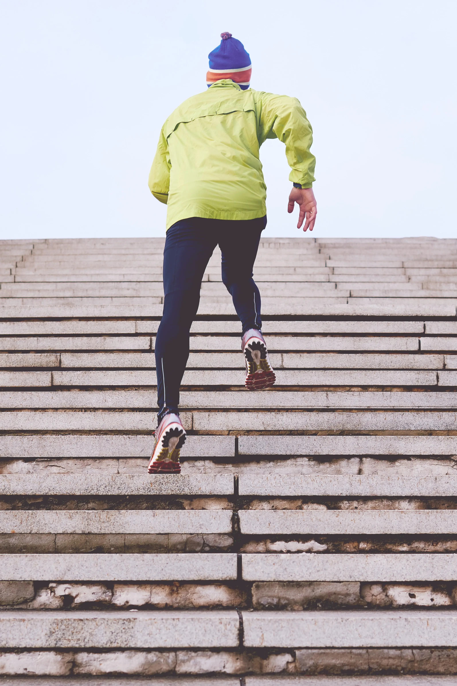
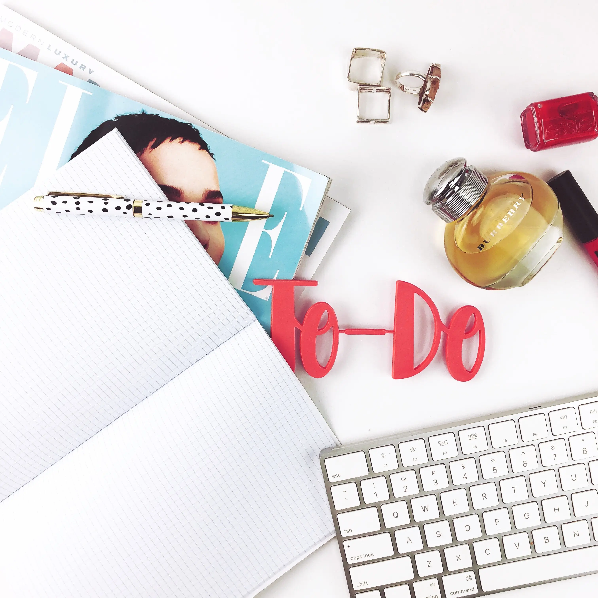

How to stay fit being a college student?
'Lack of time is a real health killer'- this phrase makes the most sense when you are out there struggling to maintain a balance between your work, studies and personal life. The hectic schedule that you been pushing through the whole day is just not letting you put on your shoes and track pants and head off to the gym.
We all know how busy a student's life can be especially if you are in those years of college where you have to focus on your studies, build a career, complete your projects, enroll for an internship and maintain a social life. The efforts you need to put in every day just don't seem to be decreasing but you can see your belly fat increasing, pun intended.
So let's talk about ways of how you can create time for fitness around such a busy schedule. As we know everything comes at a cost, so you need to be sacrificing some things to make way for things that are gonna help you in the long run.
Introduce exercise into your daily habits.
Cut off exercise from your to-do list first thing in the morning.
Filter out the things that are gonna provide value in the long run.
Come up with a schedule that helps you nurture discipline.
Don't be too hard on yourself if you fail.
Don't give in to peer pressure.
When you cant spare even a minute from your busy day, it's mostly beneficial to introduce exercise into your way of living or how you function daily.
For example, taking the stairs instead of the elevator, riding a bicycle to college instead of bikes or cars, maybe doing a small set of pushups and situps whenever you are slacking off not doing any work, you see the introduction of these habits can help you burn those calories that you would be burning otherwise in the gym.

Try waking up a little earlier and make time for a refreshing workout or a yoga session. Working out in the morning has a lot of benefits apart from saving time, it helps you boost your metabolism for the day and clear your mind, your hormonal levels are on a rise in the morning so you just might put that morning wood to duty.

Being a college student, it is obvious that you would be attending many parties and events only for the sake of gaining some social exposure, while such type of social exposure is critical for your overall growth but don't get overboard with the feeling, know what is good for you in the long run.
I know it must be tempting to attend such parties and events because all the cool kids are doing it but what's even cooler is to take of yourself, you see because self-care attracts self-love and self-love attracts high confidence and esteem that is gonna help you strengthen your social game all-together.
'Discipline is the bridge between goals and accomplishment, period'.
When you have a plan prepared for what you want in life, the path to achieving the goal becomes more clear. Come up with a proper plan of action during the day, when you wake up first thing in the morning think of ways how you would be handling the day instead of grabbing your phone and swiping through Instagram posts, have room for modifications and improvision so you can accommodate sudden changes in your plan and if you have plan laid out stick to it and work towards it with all your strength, I am pretty confident that you are gonna get it.
As a human, we are imperfect beings, we fail, we fall and then we stand back again, what matters most is trying. There are gonna be days when you will not be able to follow the plan, don't treat yourself as a failure or don't procrastinate.
According to a scientific study, people that are intelligent and exercise self-discipline are often too hard on themselves if they fail in achieving certain things, just slack off for the day and prepare extra for the next day because you always know with a new day comes new strength and new thoughts.
Being a college student I can vouch for it that you are gonna have friends that drink and smoke, having such friends often leads to an influence called peer pressure. You will need to train yourself if such a situation shows up and say no. Having such friends doesn't necessarily mean it's bad, you would just have to define clear boundaries that you are not into that life.

So those were some of the steps I undertook as my college life progressed, hope these might help you and for the ending note treat fitness as a lifestyle and not a goal, fall in love with the process and that's it you would not have to put any extra effort in pursuing it.
Stay fit and stay safe.